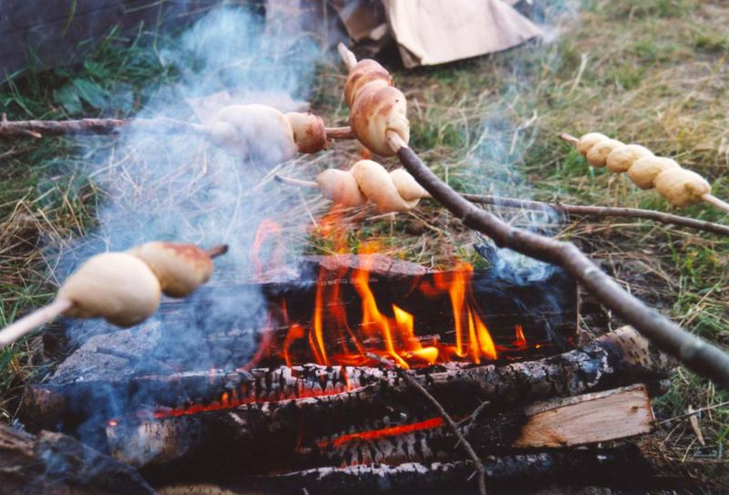

Beilagen
1. Stockbrot
Zutaten für
| g | Mehl |
| Pck. | Trockenhefe |
| EL | Zucker |
| ml | Milch |
| EL | Salz |
| TL | Öl |
Unser servier Vorschlag

Zutaten vermengen und zu einem glatten Teig kneten.
Danach muss der Teig ca. 30 Minuten an einem Ort etwas über Zimmertemperatur gehen.
Anschließend auf
entsprechende Portionen aufteilen.
Den portionierten Teig lang ziehen und
spiralförmig um einen Stock wickeln.
Dann 10 Minuten den Teig am Stock über das Feuer halten.
Rezept erstellt von
 Jens Labudda
Jens Labudda
Jens Labudda